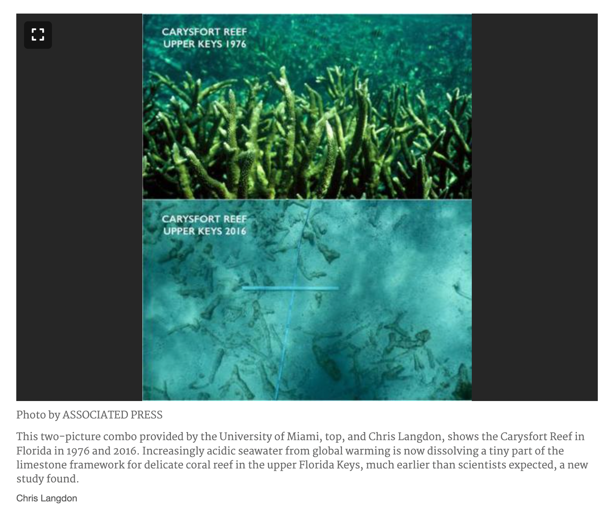
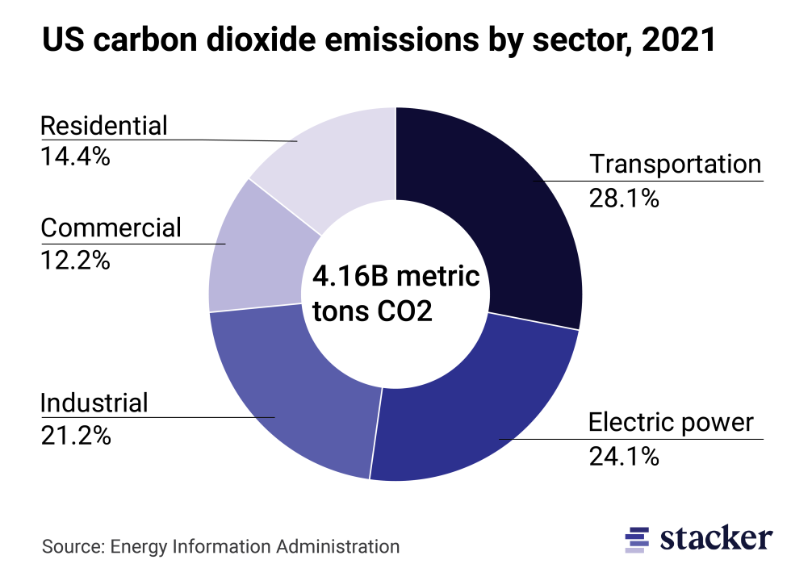

The people of the Pacific nation of Fiji have a lightness to their way of life, both materially and interpersonally. Home to an army of exceedingly gracious, why-don’t-you-stay-for-dinner types, the country has gained a reputation as the friendliest place on earth.
To illustrate the fact that this is true true, and not just good marketing true: when it became evident that their Pacific neighbors in Vanuatu were going to lose their country to sea level rise, Fiji offered one of its islands as a new home to the tens of thousands of people about to be displaced. Remarkable.
And to illustrate the fact that Fijians are both gracious and self-effacing, when I asked one woman what she thought it was about her culture that caused them to have such a good-natured reputation, she laughed. “Well I think it’s because our ancestors used to eat people, and so now we want to make sure that nobody visiting here feels uncomfortable.”
The Soft Coral Capital of the World
Fiji must also be noted as one of our planet’s greatest diving paradises. Known as the soft coral capital of the world, its pristine waters have managed to carry on remarkably untouched by many of the common stressors that have degraded the reefs in other parts of the world.
Corals here are bright and vibrant and teeming with a wild assortment of reef fish, grouper, sharks, turtles, dolphins, sea cucumbers, echinoderms, worms, shrimp, and eels. The native ‘magic coral’ fascinatingly changes colors from ruddy brown to bright white at the lightest touch. The beauty of the reefs has been protected in large part by its remoteness and by the slow pace of industry on the islands.
90% Loss in the Florida Keys
The experience of diving a healthy reef when your home country (American here) is home to almost exclusively unhealthy reefs can be eye-opening. At the time of shooting, The Undersea World of Jacques Cousteau showed a vibrant and colorful ecosystem along the southern edge of the Florida keys. Watch old episodes of the 1964 television series Flipper and you’ll see it, too.
In the last 50 years, we’ve lost more than 90% of corals off the coast of Florida. What’s left is dead or barely alive coral bodies encrusted by algae. Runoff from Florida’s heavily fertilized farmland adds so much nitrogen and phosphate to the water that the explosion of algae prevents corals, which generate half or more of their diet through the help of photosynthesizing symbiotic organisms, from gathering the sunlight they need in order to live.
Dive boats still offer tickets for excursions here, but you’re bound for a tour of sandy bottom, dead reef, some straggling tarpin, and statues that tour agencies have sunk so that divers will still have something to look at.

Causes of Reef Decline
The Global Quadruple Threat
Reef ecosystems across the entire globe are threatened by a quadruple-onslaught of rising ocean temperatures, decreasing pH, destructive fishing practices, and nutrient runoff. Warm water events in 2021 and 2022 saw a bleach or die off of 42% of the Great Barrier Reef in the first year and a further 30% the second.
This century, the ocean is on track to become 2.5 times more acidic than it was at the beginning of the last one, driven by the release of carbon dioxide into the atmosphere from the burning of fossil fuels. In this future ocean, corals and other creatures whose skeletons are made of a calcium carbonate will very definitely dissolve.
While the seriousness of this situation is hard to overstate, there are major levers we can and are trying hard to pull to adjust course and preserve the incredible beauty, not to mention the inherent right to live, of an ecosystem that we ourselves badly need.
By far the greatest driver of both ocean acidification and warming waters are the greenhouse gases released by the worldwide energy sector, with electricity and heat production heavily dominating the total makeup of global emissions. In 2024, coal still supplied one third of all the electricity production worldwide. Natural gas supplied another 20%, with nuclear, hydropower, wind, and solar rounding out the rest.

The 15% Fix: What Replacing Coal Achieves
When a task is large, it can be hard to choose the right entry point for addressing it. The good news is that there’s plenty of work to go around, and whichever entry point you choose helps. In this series, we’ll be focusing on coal. When we replace all of the world’s coal-fired electricity and heat production with non-emitting alternatives, we will have eliminated 15% of the total problem of human-released CO2 and thus stepped something like 15% of the way along the path to allowing corals to continue to live on our planet.
We’ve created an inhospitable home to a very precious animal, one which underpins global foodstocks, biodiversity, and the economic health of a large portion of the world. The task at hand, and one which we will succeed at, it to provide coral with a healthy alternative to the world as it currently stands.